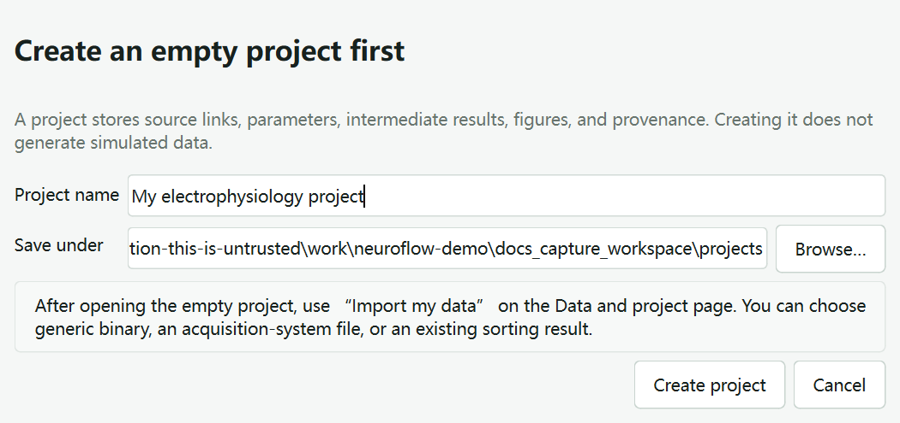
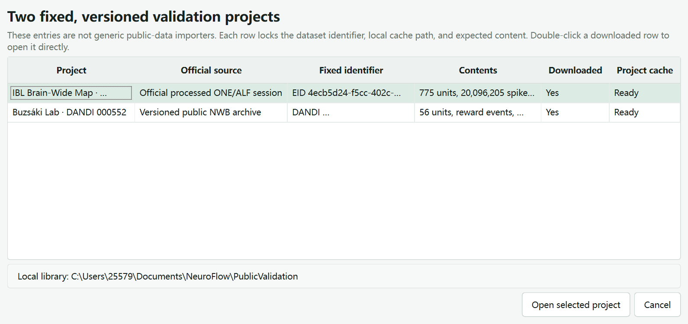

behavior_events.csv
trial,condition,event_type,behavior_time_seconds
1,left,stimulus,12.403
1,left,response,12.918
2,right,stimulus,18.271trial 定义重复试次；condition 用于分组；event_type 决定对齐事件。
Choose by what you actually have
首页把“新建项目”“导入自己的数据”“教学模拟”和“公开验证项目”分开。 数据入口表回答的是“你手里有什么文件、NeuroFlow 应从哪一步开始”。 是否能运行 spike sorting 取决于原始宽带电压是否存在，而不是取决于文件名听起来是否专业。
Each row answers what files you have and where NeuroFlow should begin. Spike sorting requires raw broadband voltage; a processed file name does not replace it.
“新建空白项目”只建立项目目录、manifest、日志和派生结果位置，不会偷偷生成模拟数据。 打开空白项目后，01 数据与项目页面会明确显示“尚未导入任何数据”，并提供 “导入我的电生理数据”“打开已验证公开项目”和“生成教学模拟项目”三个按钮。
Creating an empty project only creates its directory, manifest, audit log, and derived-data location. It never generates simulation silently. The Data and project page then presents explicit import, verified-public, and simulation actions.

| 首页按钮 | 执行结果 | 适用场景 | 不会发生什么 |
|---|---|---|---|
| 新建空白项目 | 先保存项目名和位置，再进入空白数据页 | 准备处理自己的新实验 | 不生成模拟电压，不自动选择 sorter |
| 导入自己的数据 | 一次完成项目创建和数据适配 | 已经知道要导入的文件 | 不把公开数据或模拟数据混入列表 |
| 打开已验证公开项目 | 显示两套固定编号、固定版本和下载状态 | 检查真实数据兼容性 | 不要求手动寻找 ALF/NWB 文件 |
| 生成教学模拟项目 | 选择 Neuropixels/tetrode/微丝场景并生成完整教学数据 | 学习、演示、比较 sorter | 不宣称模拟结果是真实生物学发现 |
| 恢复 NeuroFlow 项目 | 选择 neuroflow_project.json 继续 | 恢复先前项目 | 不重跑已完成节点 |
| 手里已有内容 | 应选入口 | 流程起点 | 能否在 NeuroFlow 重跑 sorting |
|---|---|---|---|
| 尚无数据，只想学习或测试 | 教学模拟项目 | 原始数据 | 可以，且有 ground truth |
| 自定义采集程序输出的 .bin/.dat | 我的通用二进制 | 原始数据 | 可以 |
| Intan/Open Ephys/SpikeGLX 等设备目录 | 我的记录系统文件 | 原始数据 | 原始 AP/宽带流存在时可以 |
| NeuroFlow 已下载的 IBL/Buzsáki 固定会话 | 已验证公开项目（2 套） | 行为或 Unit | 通常不可以，因为多为处理后数据 |
| spike_times.npy 与 cluster 分配 | 已有 sorting 结果 | Unit 质控 | 无需重跑；可导入并比较 |
用于第一次使用、演示、自动测试和 sorter 定量比较。系统生成确定性 int16 原始电压， 同时保存真正的 spike 时间，所以能够区分“算法之间一致”与“相对于真值准确”。
Creates deterministic int16 raw voltage plus known spikes for training, testing, and quantitative sorter validation.
| 控件 | 改变什么 | 什么时候调整 | 风险或结果 |
|---|---|---|---|
| 电极结构 | 通道几何、默认通道数、神经元空间扩散与典型场景 | 选择 Neuropixels、高密度硅探针、tetrode 或单根微丝 | 用于体验不同 sorter 的适用性；不代表所有真实硬件细节 |
| 模拟时长 | 样本数、事件数与 spike 数 | 快速体验用 10–30 s；比较 sorter 时用更长记录 | 时长越长，sorting、波形提取和统计越慢 |
| 采样率 | 每秒电压样本数与可表示的最高频率 | AP 常用 20–30 kHz；按目标硬件调整 | 过低无法保留动作电位波形；文件体积与采样率成正比 |
| 通道数 | 并行记录维度和文件每帧宽度 | 按探针场景测试电脑负载 | 影响内存、文件大小、sorting 速度与空间信息 |
recording.bin # time-major interleaved int16 voltage
metadata.json # rate, channels, dtype, scale, duration
probe_geometry.csv # channel positions and groups
behavior_events.csv # trial, condition, event_type, behavior clock
ephys_ttl.csv # matching pulses in the ephys clock
ground_truth.npz # known spike times by simulated unit
import_config.json # exact values required by the binary importer适用于没有现成读取器的交错二进制。NeuroFlow 不猜测关键元数据： 通道数、采样率、dtype 和电压缩放必须来自采集系统说明或原始记录配置。
| 字段 | 含义 | 填错时的典型现象 | 检查方法 |
|---|---|---|---|
| 采样率 Hz | 采样点到秒的换算 | 所有事件和 spike 时间成比例错位，频谱横轴错误 | 与设备配置文件核对，不从波形外观猜 |
| 通道数 | 每个时间帧包含多少样本 | 通道出现周期重复、斜纹、相邻通道像被轮转 | 文件字节数必须整除 dtype 字节 × 通道数 |
| dtype | 磁盘上每个样本的编码 | 振幅巨大、接近零、NaN 或波形完全随机 | 优先读取设备元数据；常见为 int16 |
| μV / bit | ADC 整数步长对应的微伏 | 波形形状正确但所有电压幅值按固定倍数错误 | 使用设备增益和 ADC 说明计算 |
| 复制源文件 | 复制到项目 raw/ 或保持只读链接 | 复制大文件会占用额外磁盘 | 默认保留只读链接；移动源文件前再考虑复制 |
| 事件 CSV | 可选行为事件，至少有 time_seconds | 缺少时仍能 sorting，但无法做事件对齐 PSTH | 检查秒/毫秒/采样点单位，建议含 trial、condition、event_type |
该入口使用 SpikeInterface extractors 读取成熟格式。源文件保持不变， NeuroFlow 在项目缓存中建立统一的 int16 记录，以便后续模块共享相同接口。
| 系统 | 通常选择 | 需要关注 | sorting 前确认 |
|---|---|---|---|
| Intan | .rhd/.rhs 文件 | 放大器流、数字输入、原始量纲 | 通道顺序、参考通道、刺激伪迹 |
| Open Ephys | 记录目录 | 多 stream、多 recording/segment | 选择正确 AP/continuous stream |
| SpikeGLX / Neuropixels | 含 .meta/.bin 的目录 | imec0.ap、imec0.lf、nidq 的职责不同 | AP stream 用于 sorting，LF 用于 LFP，nidq/同步不可混淆 |
| Blackrock/Plexon/TDT | 设备文件或 block 目录 | 不同版本和 stream 命名 | 确认是否为连续宽带数据，而非仅事件或已检测 spike |
| NWB ElectricalSeries | .nwb | 文件可同时有 raw、LFP、Units 与行为 | 选原始 ElectricalSeries 才能重跑 sorting；Units 表属于处理后结果 |
读取能力与参数以 SpikeInterface extractors 官方文档 为准。NeuroFlow 的适配器负责选择、检查、缓存与记录来源，不重新实现设备解析器。
主页的公开入口明确锁定下列两套数据。双击后会显示本机下载状态和项目缓存状态； 已下载时可直接建立或打开项目，不需要再次寻找目录。通用 ALF/NWB 导入仍保留在高级导入器中， 但不与这两个已验证项目混淆。
| 验证项目 | 固定编号 | 本机数据内容 | 可继续的阶段 |
|---|---|---|---|
| IBL Brain-Wide Map · Neuropixels | EID 4ecb5d24…；PID da8dfec1… | 775 Units、20,096,205 spikes、529 trials | Unit QC、行为、PSTH、统计、解码 |
| Buzsáki Lab · DANDI 000552 | 0.230630.2304；asset f36a3ffe… | 56 Units、奖励事件、睡眠状态、1,483 ripple | Unit QC、事件/状态分析、统计、解码 |

IBL ALF 字段参照 IBL spike-sorting data guide； NWB Units、TimeSeries 与 intervals 的语义参照 PyNWB。
用于从 Kilosort/Phy 或兼容目录继续。NeuroFlow 将各 sorter 的 spike 时间统一成秒， 保留原生输出与 provenance，并允许多个结果同时存在、切换和比较。
| 文件/字段 | 用途 | 常见问题 | NeuroFlow 处理 |
|---|---|---|---|
| spike_times.npy | 每个 spike 的采样点 | 误当成秒会放大采样率倍 | 按填写的原采样率转换为秒 |
| spike_clusters.npy | 人工整理后的 cluster 分配 | 缺失时只能退回 template 分配 | 优先使用 cluster；缺失时读取 spike_templates |
| params.py / ops.npy | 排序参数与数据来源 | 移动目录后 dat_path 失效 | 作为 provenance 保留，不直接执行不受信脚本 |
| cluster_info.tsv | Phy 标签和人工决定 | good 不等于跨项目统一标准 | 后续版本映射到人工复核记录，不覆盖原文件 |
| 采样率 | 采样点换算为秒 | 填写错误导致所有事件对齐错误 | 创建项目前强制明确填写 |
Kilosort 的标准输出定义见 Kilosort exported files。 多 sorter 比较采用统一 Unit/spike 接口；真实数据上的算法一致度不是准确率，只有 ground truth 数据才能报告 precision/recall。
行为程序和电生理设备通常各有自己的时钟。只有已确认同一时钟时， 才能直接把行为 time_seconds 当作电生理秒；否则应导入两份脉冲并拟合时间映射。
trial,condition,event_type,behavior_time_seconds
1,left,stimulus,12.403
1,left,response,12.918
2,right,stimulus,18.271trial 定义重复试次；condition 用于分组；event_type 决定对齐事件。
pulse_index,ephys_time_seconds
1,12.418632
2,18.286941
3,24.099104TTL 时间必须来自电生理时钟。系统按顺序/标识配对后拟合 ephys = offset + slope × behavior。
| 输出 | 代表什么 | 如何判断 | 不能忽略的异常 |
|---|---|---|---|
| offset | 两设备起始时刻差 | 可大可小，本身不代表失败 | 不同 session 不应盲目复用 |
| slope | 时钟速率比例 | 接近 1；偏离说明时钟漂移 | 长记录只做单一 offset 会累积误差 |
| residual | 每对脉冲拟合后的剩余误差 | 查看均值、最大值和随时间趋势 | 阶跃常提示漏脉冲或错配，曲线趋势可能为非线性漂移 |
| matched/missing | 成功配对与缺失脉冲数 | 与行为日志和 TTL 数量核对 | 不能为了让数量一致而静默删除事件 |